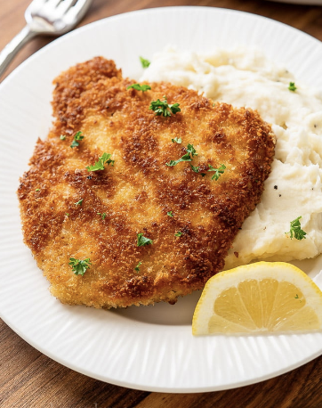

German Style Schnitzel
This classic schnitzel recipe is crispy, golden, and packed with flavor. It's quick and easy to make, perfect for a satisfying meal in under 30 minutes.
- 5 chicken breasts, flattened to 1/4 inch thickness
- 1 large egg
- 1 cup panko breadcrumbs
- 1/2 cup all-purpose flour
- Salt and pepper to taste
- 1/2 teaspoon paprika (optional for extra flavor)
- Vegetable oil or clarified butter for frying
- Lemon wedges for serving
- In an empty bowl, mix the flour with salt, pepper, and paprika.
- In another empty bowl, whisk the egg.
- In a deep plate, or another empty mixing bowl, pour in the breadcrumbs.
- Tap each chicken breast dry with a paper towel, and then coat in the seasoned flour, ensuring an even layer.
- Dip the floured chicken into the egg bowl, making sure it's completely covered.
- Press the chicken into the panko breadcrumbs to coat. For extra crispiness, repeat the egg and breadcrumb steps to double coat.
- Heat about 1/4 inch of oil or butter in a large skillet over medium-high heat. The oil should shimmer but not smoke.
- Fry the schnitzel for 3-4 minutes on each side or until golden brown and cooked through. Adjust the heat as needed to avoid burning.
- Transfer the schnitzel to a plate lined with paper towels to drain excess oil.
- Serve immediately with lemon wedges and your favorite sides, such as french fries or a mediterranean salad.